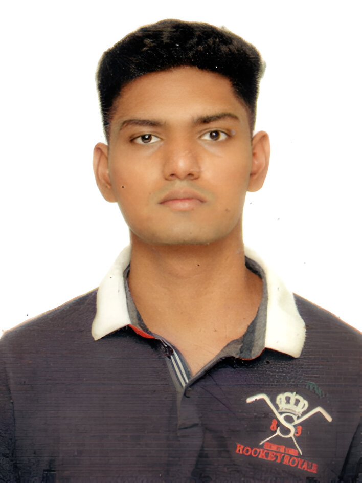

About Me
I’m Adrian Menezes, a Computer Engineering graduate in 2025 from Fr. Conceicao Rodrigues College of Engineering, with honors in Cyber Security.

My journey has been shaped by a love for technology, especially in cybersecurity and data analytics. I’ve built mental health platforms powered by AI, job-matching engines, and voice assistants for the visually impaired. I’m passionate about using code to solve real-world problems and improve accessibility.
Education
- 🎓 BE in Computer Engineering, Fr. Conceicao Rodrigues College of Engineering (2021–2025), CGPA: 8.33
- 🏫 St. Andrews College, Bandra (2021) – 92%
- 🏫 Holy Cross Convent School, Mira Road (2019) – 91.20%
Certifications
- ✅ Google Cybersecurity - Google(Coursera)
- ✅ AWS Cloud Development - AWS Academy
- ✅ Cisco Ethical Hacker - CISCO
- ✅ Google Cloud Security - Google(Coursera)
- ✅ Active member of Hack The Box
Skills
- Languages: Python, Java, SQL
- Web Dev: HTML, CSS
- Cybersecurity: Vulnerability Assessment, Pen Testing, Cloud & Network Security
- Cloud: AWS, Google Cloud
- Data Science: Pandas, NumPy, TensorFlow, NLP, EDA, Sentiment Analysis
- Databases: MySQL, MongoDB
Experience
- Intern, Antarang Foundation (2021)
Educated 300+ individuals during the pandemic, organized vaccine awareness talks, and supported underprivileged families. Created social media content using Canva. - Aero-Modeling, Team Vaayushastra (2022- 2023)
Created plane simulations using Blender, managed social media campaigns, and led sponsorship outreach for international competitions.
Key Projects
- MindEase – Mental Health AI Platform:
Developed a 24/7 AI therapist chatbot with GPT-3.5 and LangChain, trained suicide prediction models with 96.5% accuracy using LLaMA-2 and RoBERTa, deployed securely with Docker and Hugging Face. - Job Surge:
Job-matching platform using Django, SQL, HTML/CSS; live search, employer dashboard, and instant booking. Built for India’s local workforce. - Messaging Assistant for the Visually Impaired:
Voice-based messaging app using Flutter, Alan AI, and Google Speech API with text-to-speech, reply dictation, and speech recognition.
Achievements
- 🏆 Qualified NDA Exam
- ⚽ Captain of college football team, won 5 state-level tournaments
- 🏐 District Champion in Throwball & Handball (also coached winning team)
- 🏕 Completed Kedarkantha Trek, Scuba diving, Parasailing
Interests
Cybersecurity, AI/ML, Sports (cycling, football, trekking), space exploration, mental health technology, and personal growth through constant learning.
📫 Want to connect or collaborate? Use the contact form below or message me on LinkedIn.